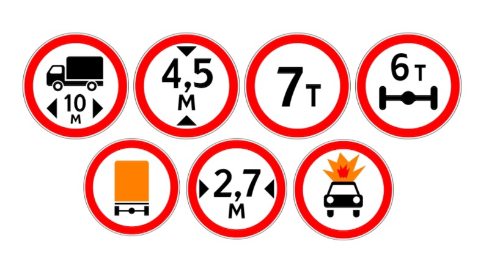

Использование грузового автотранспорта в логистике
Оптимизация грузоперевозок необходима для продуктивной деятельности компаний,
работающих в сфере транспортной логистики. Применение геоинформационных
технологий в логистике, например ГИС для грузовиков, может ускорить создание
маршрута для перевозки грузовыми автомобилями.
Основу грузовых перевозок в России составляют три ключевых вида транспорта:
«пригородный» (с малыми средними расстояниями и большим тоннажем) —
автомобильный и «магистральные» (с дальними расстояниями транспортировки грузов
и большими объемами грузооборота) — трубопроводный и железнодорожный.
На перевозки грузовым автотранспортом приходится немалая доля грузоперевозок. В
2018 году на коммерческие автомобильные рейсы (транспортные и курьерские
компании) приходилось 29,4% перевезенных грузов. При этом автомобильные
грузоперевозки могут осуществляться только в пределах разрешённых для движения
грузовиков дорог, это условие объясняет необходимость разработки и
совершенствования навигаторов по грузовому каркасу — в Москве так называется сеть
улиц, по которым разрешено движение грузового автотранспорта.
К преимуществам перевозок грузовиками можно отнести доступность и мобильность.
Однако существует ряд ограничений, которые тормозят развитие автомобильных
грузоперевозок, среди которых неразвитость дорожной инфраструктуры, проблемы
работы существующих ГИС для грузовиков и навигаторов по грузовому каркасу,
сложность прокладки маршрута для перевозки грузовыми автомобилями, а также
большое число устаревших предприятий транспорта. Расширение сети автомобильных
дорог и увеличение количества грузовиков не в полной мере способствуют увеличению
объемов перевозимых грузов.
Проблемы навигации при перевозках грузовым автотранспортом частично решаются за
счёт применения специальных ГИС для грузовиков и навигаторов по грузовому каркасу.
Ограничения маршрутов для перевозки грузовыми автомобилями
При создании маршрута для перевозки грузовыми автомобилями нужно учитывать
особые потребности в навигации, которые можно условно разделить на физические
ограничения и запреты на движение
Физические ограничения объясняются тем, что грузовик не может проехать на
конкретном участке дороги — из-за массы, нагрузки на ось, высоты, длины кузова и
особого груза. Такие участки обычно отмечают запрещающими дорожными знаками.

Существуют запреты на движение крупной техники по некоторым улицам и районам. В каждом городе такие запреты свои, но почти везде грузовики не допускаются в центральные части городов. В Москве для этого разработан грузовой каркас и составлен список улиц, где грузовикам ездить разрешено. «Грузовой каркас» — это разделение улиц округа на 2 зоны: сам «грузовой каркас» и «жилая застройка». По улицам грузового каркаса допустимо движение грузовых автомобилей. В жилых зонах движение грузовиков с разрешенной максимальной массой более 2,5 тонн допускается только для обслуживания предприятий или жителей внутри района. Однако необходимо иметь подтверждающие документы: водительское удостоверение на право управления автомобилем соответствующей категории, регистрационные документы на данное транспортное средство, страховой полис, путевой лист, документы на перевозимый груз, документы о регистрации (для жителей данного района).
Задача грузового каркаса — уменьшить количество транзита грузовых автомобилей через жилые районы, чтобы уменьшить шум, аварийность и пробки, и снизить негативное влияние на экологическую ситуацию.
В случае грузового каркаса знаки ограничивают не просто участок дороги, а целую зону. Это может быть один квартал или целый район.

Возможности ГИС для грузовиков от 2ГИС
В России реализацией навигационного приложения с учётом всех местных требований ПДД для грузового транспорта занимается 2ГИС.ГИС для грузовиков учитывает:
Навигатор по грузовому каркасу 2ГИС работает в большинстве регионов России и поддерживает построение междугородных маршрутов.
Также сервис доступен в городах Казахстана (Кокшетау, Петропавловск и Усть-Каменогорск) и Объединённых Арабских Эмиратов. Маршруты для перевозки грузовыми автомобилями доступны в Ташкенте (Узбекистан), Харькове и Одессе (Украина).
Источники:
1)Грузовые перевозки в России: обзор текущей статистики - Бюллетень о текущих тенденциях российской экономики; сентябрь 2019
2)Зачем 2ГИС запустил навигатор для грузовиков
3)инструкция ГИС для грузовиков
4)Грузовой каркас